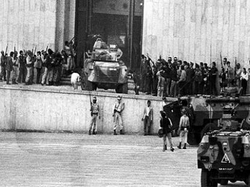
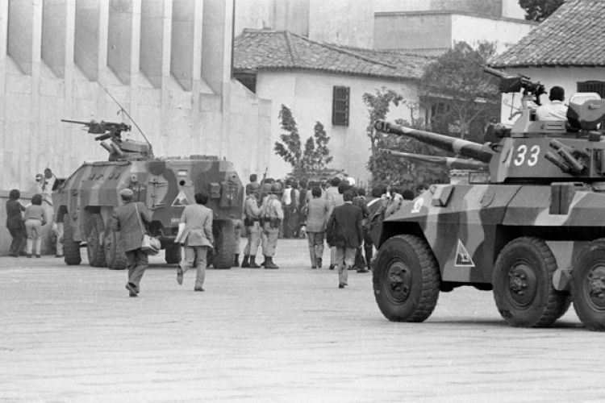
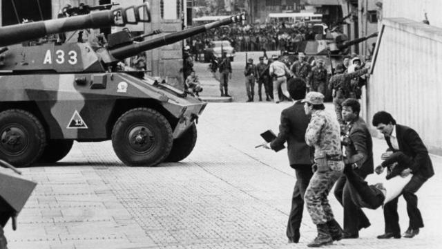

Estado del arte
El presente estado del arte pretende dar a conocer las investigaciones realizadas a propósito del tema de la toma del palacio de justicia, esto con el fin de conocer los postulados recientes sobre dichas problemáticas. Es por esto que por medio del fichaje de información se lograron sintetizar 5 documentos sobre como sucedió en este sitio emblemático y peligroso de Colombia.

Renán Vega Cantor (2016): El autor parece dar a entender que las fuerzas militares conocían la acción planeada por el grupo guerrillero M-19, pero en lugar de impedirla, facilitaron una situación para atrapar a los insurgentes. Esta afirmación no se basa en especulaciones, ya que existen documentos y noticias de prensa anteriores al incidente que confirman el conocimiento de las intenciones del M-19. Por ejemplo, el 18 de octubre, varios periódicos informaron sobre un plan descubierto para que el M-19 tomara el Palacio de Justicia. El ministro de Defensa de la época comentó públicamente un texto anónimo recibido por las Fuerzas Armadas, en el que se detallaba el plan del M-19 para tomar el edificio del Tribunal Supremo.
HéctorAbad Faciolince Colombiano, escritor y periodista. Texto cedido por Germán Castro Caycedo (2008): Lo q el autor quiso trasmitir fue toda la violencia y masacre q se vivió ese día en la capital de nuestro país, teniendo en cuenta como actuaron todos desde militares hasta el personal de la salud, como esta masacre dejo a más de 96 personas muertas incluyendo a civiles y guerrilleros, pero no se habla de las múltiples personas que fueron "rescatadas

Villamizar Herrera (1986): El artículo nos quiere informar sobre la toma del Palacio de Justicia en Bogotá por parte del M-19 el 6 de noviembre de 1985, y cita documentos del M-19
Jimeno (2017): El autor de este libro menciona que se requiere una nueva doctrina militar como la gran lección de la Toma del Palacio de Justicia. También destaca la importancia de esclarecer la verdad como mecanismo de reparación. reflexiona sobre su libro y busca una reflexión a partir de experiencias de servidores públicos. Aunque no se menciona específicamente su opinión sobre la Toma del Palacio de Justicia, es posible que en el libro se aborde este tema.

Natalio Cosoy (2015): En el artículo se celebra el 30 aniversario de la toma del Palacio de Justicia en Colombia en 1985 por la guerrilla del M-19; esta acción provocó más de 100 muertes, entre ellas 11 jueces de la Corte Suprema. No se olvida el enfrentamiento de dos días entre la guerrilla y el ejército, con acusaciones de secuestros y violaciones a los derechos humanos, además de referencias a investigaciones posteriores y relatos diversos.